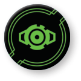

CALCULATE ()
Pilots can calculate, using advanced computing power to increase their combat performance. When a ship performs the action, it gains one calculate token.

A ship is calculating while it has at least one calculate token. Calculate tokens are circular, green tokens. A calculating ship follows these rules:
-
While a calculating ship performs an attack, during the Modify Attack Dice step, it may spend one or more calculate tokens to change that many of its results to results.
-
While a calculating ships defends, during the Modify Defense Dice step, it may spend one or more calculate tokens to change that many of its results to results.
Additionally:
-
A ship cannot spend calculate tokens to change results to or results if it does not have any results.
-
If a card ability instructs a ship to gain a calculate token, this is different than performing a action. A ship that gains the token without performing the action can still perform the action this round.